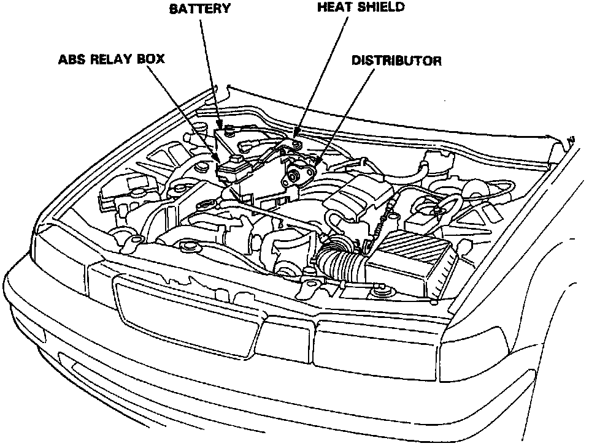
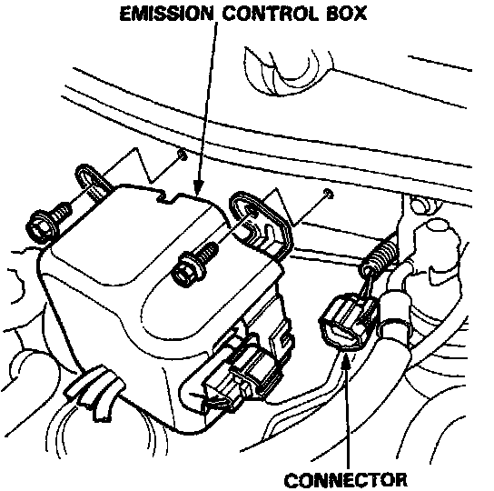
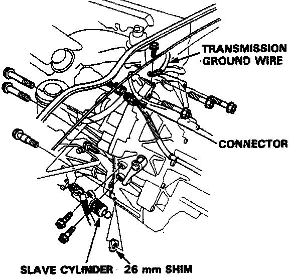
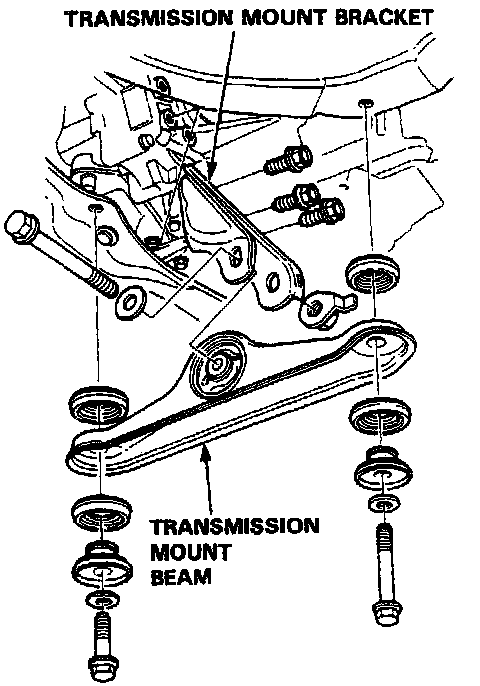
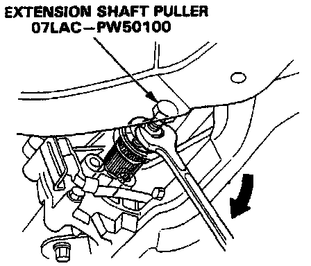
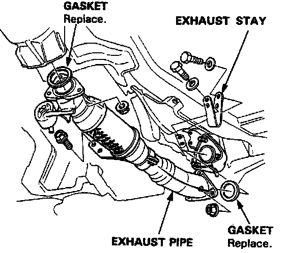
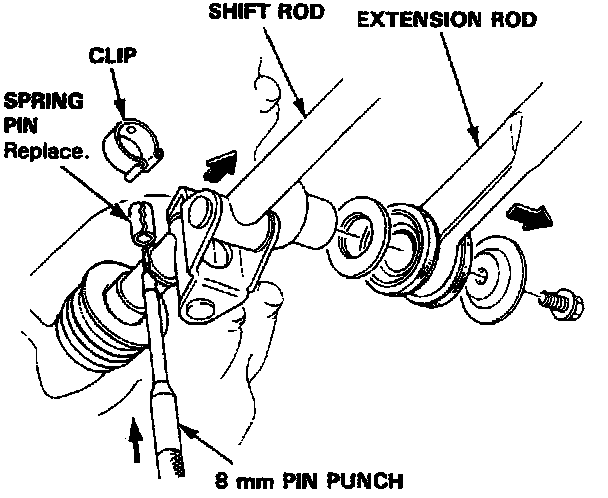
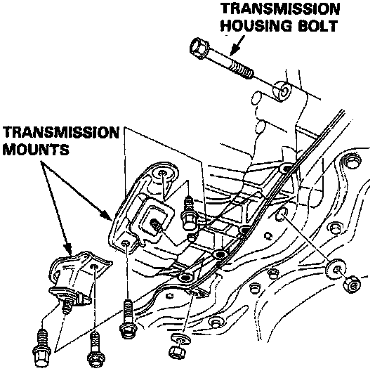
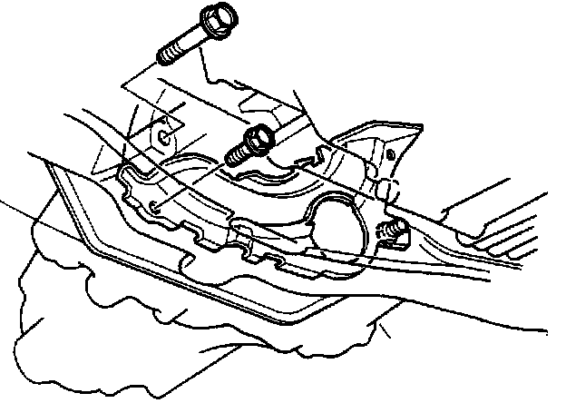

Transaxle Removal
TRANSMISSION ASSEMBLY REMOVAL* Make sure jacks and safety stands are placed properly, and hoist brackets are attached to correct positions on the engine.
* Apply parking brake and block rear wheels so car will not roll off stands and fall on you while working under it.
CAUTION: Use fender covers to avoid damaging painted surfaces.
NOTE: The radio has a coded theft protection circuit. If service to the car requires any of the following, be sure you get the customer's code number before you begin work:
- disconnecting the battery.
- removing the No.39 BACK UP (10 A) fuse.
- removing the radio.
After service, reconnect power to the radio and turn it on. The word "CODE" will be displayed. Enter the customer's 5-digit code to restore radio operation.

1. Disconnect the battery negative (-) and positive (+) cables from the battery.
2. Remove the battery and battery base.
3. Remove the ABS relay box.
NOTE: Do not disconnect the connector.
4. Remove the heat shield.
5. Remove the distributor.
NOTE: Do not disconnect the connector.

6. Remove the control box.
CAUTION: Do not remove the vacuum tubes from the control box.
7. Disconnect the transmission ground wire and back up light switch connector.

8. Remove the slave cylinder.
NOTE: Do not operate the clutch pedal once the slave cylinder has been removed.
9. Remove the transmission housing bolts and 26 mm shim.

10. Remove the transmission mount beam and transmission mount bracket.
11. Remove the secondary cover and 33 mm sealing bolt.
NOTE: Shift to low gear to lock the secondary gear.

12. Disconnect the extension shaft from the differential using the special tool.

13. Remove the exhaust pipe and exhaust stay.

14. Remove the shift rod and extension rod.
15. Remove the nuts of the transmission mounts.
16. Place a jack under the transmission.
17. Remove the transmission mounts.

18. Remove the transmission housing bolt.
19. Remove the clutch cover attaching bolt.

20. Remove the transmission housing bolt.
21. Pull the transmission away from the engine until it clears the mainshaft.